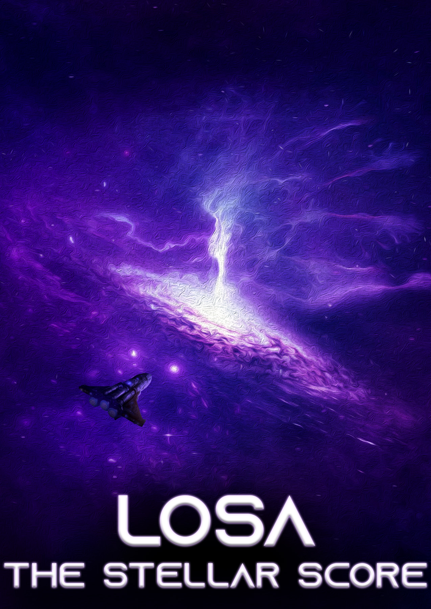

The Beginning

Centuries way into the future in a galaxy that is pretty close exists a galactic wide civilization called 'Losa' ruled by the Losatag bloodline. Stars turned into efficient energy machines, whole planets reserved for farming or industrialization, systems connected by instantaneous communication. The wealthiest of families have their own light-speed ships, whilst the poor spend their days laboring away on polluted planets.
You live a pretty interesting and exciting life, going around as a locally renowned bandit. Way less boring than the old Moon-taxi gig you had before. You've spent years stealing or robbing whoever you thought deserved it, every now and then giving some of that money back to impoverished communities. You were even able to build your own ship and a little ragtag team of bandits, Sachi the Cyber-terrorist and Dom the Demolitionist. Praised by the poor, respected by criminals, loathed by those in power, and known only by name, not by face.
Recently, news spread of a prototype built by a neighboring galaxy that was now seemingly being held in your galaxy. It's supposedly stored in a vault overlooked by the Losatags, capable of power only they would know of. You decide that this could be it, a way to not only bite back at the selfish rulers that merely fly over the lower-class but to possibly gain the most power or wealth you've ever had. Your team agrees and together make your way to the vault. You could spend months coming up with an elaborate plan, but who knows what could happen to the prototype by then? As you fly your ship to the Vault hangar, your team needs to come up with an approach. Sachi believes that it would be better to sneak through the ventilation system, staying out of sight. You suggest that you all disguise as local merchants so as to blend with the crowd. Dom disagrees, stating that his explosives could easily get you to the vault.